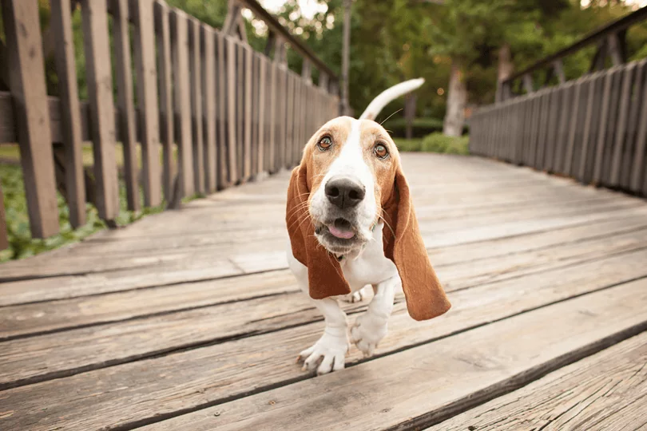

Basset hound

Esse amigo de olhos caídos e orelhas compridas vai fazer você se apaixonar! Uma das raças mais famosas e populares do mundo, o basset hound é um cachorro companheiro e amoroso. E a raça também é muito paciente e gentil, o que faz dela uma das favoritas dos amantes de cachorros.
Atualmente, o basset hound é uma das raças mais famosas do mundo, com várias aparições em filmes e no mundo pop, como cachorro de estimação de Sherlock Holmes ou como o Droppy, que sempre infernizava a vida do lobo.
Origem:
França
Peso: 18-30 kg
Porte: médio (se quiser saber mais sobre outras raças de porte médio, clique aqui!)
Altura: 58-68 kg
Expectativa de vida: 12-13 anos
História
O basset hound veio da França. De lá se origina seu nome, “basset”, que vem do francês “bas”, ou “anão”, por causa de suas pernas curtas. Ele é um cachorro do grupo de raças sabujas, ou hound, que é uma denominação típica de cães de caça, o que faz do basset um “cão de caça anão”.
A raça foi criada para caçar presas de pequeno porte, como lebres e coelhos, tanto sozinha como em bando. Isso porque seu faro era, e continua sendo, bastante apurado, perdendo somente para o Cão de Santo Humberto, com quem dizem que ele foi miscigenado para aumentar ainda mais a sua capacidade física. Há, ainda, quem acredite que o basset hound foi cruzado para reduzir suas patas de modo que seu corpo ficasse próximo ao chão e ele pudesse sentir mais acentuadamente o cheiro de sua presa.
Embora credite-se sua origem à França, tendo como ancestrais o basset d’artois e o basset artesiano normando, acredita-se que o basset hound como o conhecemos hoje foi aprimorado na Inglaterra. Apesar disso, há pouca documentação sobre suas andanças do século 16 em diante, mas registros sugerem que seu desenvolvimento inicial se deu por conta dos frades da abadia de São Hubert, que pretendiam criar uma raça de pernas curtas que pudesse ser acompanhada durante as caçadas.
Quanto à entrecruza com os Cães de Santo Humberto se deu por volta de 1930, com o intuito de aumentar o porte da raça. Em 1935 foi criado o primeiro clube americano da raça e ele foi reconhecido oficialmente pelo American Kennel Club (AKC).
Características
Cores da raça
De acordo com o padrão oficial da raça, as cores do basset hound mais comuns são preto, branco e marrom (tricolor), caramelo e branco ou preto e branco (bicolor), mas ele também pode apresentar outras cores, ou combinações de cores, como fulvo (tom próximo ao caramelo) e branco, marrom e branco, cinza, preto e branco, entre outros.
Temperamento do basset hound
Não é à toa que ele já foi o cachorro do Sherlock Holmes. Muito inteligente, o basset não vai poupar esforços para manipular seu dono com seus olhos caídos e receber carinho e atenção. Ele gosta de agradar as pessoas, por isso não é muito afeito à solidão. Bem-humorado, também adora brincar, e se for de pique-esconde melhor ainda, assim ele pode exercitar seu poderoso faro canino.
A raça com crianças, estranhos e outros animais
Seus olhos de aparência triste na verdade escondem uma disposição viva e afetuosa. Essa raça adora crianças de todas as idades, e costuma ter muita paciência com elas, mesmo que elas vejam suas grandes orelhas como brinquedo.
E com outros caninos não é diferente. Bonachão e simpático, o basset hound curte muito sair para caçar, ou mesmo só para ver a vida passar, na praça da cidade. E ele pode sair fazendo amizade com todo mundo.
O basset late muito?
Não. Como é uma raça de personalidade muito calma e tranquila, o basset não costuma latir com frequência, mas é dado aos uivos, principalmente se ficar longos períodos sozinho. Ele é muito sociável e inteligente, por isso gosta de estímulo e de estar perto da família e do tutor. Então se você for passar muito tempo fora de casa, é bom treinar seu basset hound para suportar as horas de solidão e não incomodar os vizinhos.
A raça é destruidora?
Não, mas com ressalvas. Toda raça pode ser um pouco destruidora quando fica ansiosa, e com o basset hound não é diferente. Ele não tem a energia do labrador retriever, nem a disposição maluca do boxer, mas pode se chatear se ficar muito tempo sozinho ou não fizer exercícios. Daí até começar a roer coisas é um pulo. Para evitar esse problema, compre brinquedos para ele morder e passeie bastante com ele.
O basset é agitado?
Isso depende da idade do seu basset hound. Quando filhote, ele é bem vivo e brincalhão, mas isso costuma passar conforme a idade vai chegando. Mesmo assim, ele não vai recusar uma brincadeira e uma atividade física.
Cuidados
Para garantir que seu basset hound esteja sempre limpo e saudável, você vai precisar gastar algumas horas da sua semana para isso. Veja os cuidados gerais com a raça a seguir:
Banhos
: o banho não precisa ser dado com tanta frequência, mas isso vai depender um pouco da sua rotina e de onde você mora com seu basset hound. Se for em uma casa grande e com quintal, pode ser que um banho a cada quinze dias seja necessário, mas se ele vive em apartamento, uma vez por mês é o suficiente.
Pelos: com um pelo macio e curto, a escovação do seu basset hound não precisa ser diária, mas deve ocorrer pelo menos uma vez por semana para remover os pelos mortos e monitorar a saúde da pele. Isso porque suas ruguinhas devem estar sempre secas e limpas para não causar problemas dermatológicos.
Rosto: o basset hound costuma ser um grande babador, por isso é importante limpar o rosto dele com uma frequência um pouco maior que a do banho. Você pode usar soro fisiológico ou alguma loção recomendada por seu veterinário para isso.
Dentes: apesar de salivar bastante, e isso ajudar a preservar sua dentição, tente escovar os dentes do seu basset hound pelo menos uma vez ao mês, para evitar a criação de placas ou tártaro.
Orelhas: como as orelhas do basset hound são grandes, às vezes podem se arrastar no chão. Então fique atento e monitore-as sempre para ver se não há a presença de sujeiras e machucados.
Saúde
O basset hound costuma ser muito saudável, mas alguns problemas de saúde comuns à raça podem se desenvolver. Veja os principais problemas de saúde do basset hound:
Estômago: a torção gástrica, ou síndrome da dilatação vólvulo gástrica, acontece quando há dilatação seguida de torção do estômago causadas pela ingestão em excesso de alimentos ou água. Apesar de acometer cães de porte maior, raças menores também podem ter predisposição a essa condição. Se você notar que seu basset hound está com o abdome inchado, vomitando, inquieto ou com dificuldades para respirar, leve-o ao veterinário.
Sangue: a doença de Von Willebrand, que afeta a circulação do sangue, é um distúrbio causado por um sangramento, gerado pela ausência de uma proteína chamada de fator de Von Willebrand (FvW). Os cães com essa condição apresentam alterações hemorrágicas e, por isso, não é recomendado fazer cirurgias, pois a cicatrização ficará comprometida. Alguns cachorros podem ainda desenvolver trombose. O diagnóstico é feito por teste de sangue.
Tireoide:
o hipotireoidismo altera a produção do hormônio tiroxina, que regula o metabolismo. O principal sintoma é a perda de pelo, que ainda pode ficar quebradiço e fino. Outro sinal é a presença de manchas pretas na pele do animal, além do aumento do peso, infecções e intolerância ao frio. Embora seja uma doença crônica, que não tem cura, o hipotireoidismo é tratável: o basset hound pode ter uma vida saudável e plena.
Nível de exercícios do cachorro
Apesar de ser calmo e não muito agitado, o basset hound é um cachorro ativo e adora ser desafiado. E mesmo com suas pernas curtas, são ótimos para aprender esportes caninos e são muito felizes no adestramento.
Mas se você não pretende ter um cachorro esportista, lembre-se que o seu basset hound precisa de estímulos diários. É bom passear e brincar com ele todos os dias. A média de exercícios recomendada é de 30 minutos de duração, com caminhadas de cerca de 1,5 km de extensão.
Preço
Quer saber quanto custa um basset hound? O preço de um filhote de basset hound pode variar de R$ 600 a R$ 2.500. O valor foi calculado com base no preço nos principais sites de venda do país.
Antes de decidir comprar um cachorro, lembre-se que existem muitos animais abandonados nas ruas ou resgatados por ONGs à procura de uma família amorosa. Adotar é tudo de bom! ?
Curiosidades